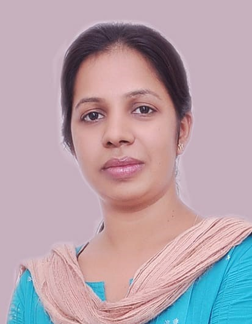

Dr. Poonam Agarwal
• Master of Technology: M.Tech Microelectronics, Panjab University, Chandigarh, India 2004.
• Bachelor of Technology: Electrical Engineering Adesh Institute of Engineering and Technology Faridkot, affiliated to Punjab Technical University Jallandhar, Punjab, India 2001.
• 2012 April-2013 April: Postdoctoral research fellow at Nanyang Technological University, Singapore.
• 2011 May-2012 March: MEMS Project Staff (Assistant Professor Grade), at MEMS Design Centre, Jaypee Institute of Information Technology, Noida, UP, India.
• 2004 June-2004 December: Project officer, CDAC Mohali, India.
• 2003 August-2004 May: M.Tech project trainee at Semiconductor Complex Limited, Mohali, India.
2. MHRD scholarship during Ph.D.
3. GATE qualified; GATE scholarship during M.Tech.
Dr. Poonam Agarwal
(Assistant Professor)
MicroSystems Lab (µSL), Lab no. 13, School of Computer & Systems Sciences, Jawaharlal Nehru University, New Delhi, India-110067.
Email ID:poonamgoel@mail.jnu.ac.in , poonam.goel13@gmail.com
Contact Number : (+91) 011 26704772 (O) : (+91) 83770 90575(M)
Assistant Professor: (04.09.2013-currently)
Research Areas
Microsystems, RF MEMS, polymer MEMS, Energy harvester, Microwave Biosensor, triboelectric energy harvester,Education
• Ph.D Electrical Communication Engineering Department, Indian Institute of Science, Bangalore, Karnataka, India 2011 Thesis Titled “Design, development, and integration of a meso-scale electrostatic phase shifter on microwave laminate” Research Area: Radio Frequency Micro-Electro-Mechanical Systems (RF MEMS).• Master of Technology: M.Tech Microelectronics, Panjab University, Chandigarh, India 2004.
• Bachelor of Technology: Electrical Engineering Adesh Institute of Engineering and Technology Faridkot, affiliated to Punjab Technical University Jallandhar, Punjab, India 2001.
Past Experience
• 2013 April-2013 September: DST INSPIRE Faculty at CEERI Pilani Rajasthan.• 2012 April-2013 April: Postdoctoral research fellow at Nanyang Technological University, Singapore.
• 2011 May-2012 March: MEMS Project Staff (Assistant Professor Grade), at MEMS Design Centre, Jaypee Institute of Information Technology, Noida, UP, India.
• 2004 June-2004 December: Project officer, CDAC Mohali, India.
• 2003 August-2004 May: M.Tech project trainee at Semiconductor Complex Limited, Mohali, India.
Award/Honour
1. DST INSPIRE Faculty Awardee 2012 from Department of Science & Technology, Govt. of India.2. MHRD scholarship during Ph.D.
3. GATE qualified; GATE scholarship during M.Tech.